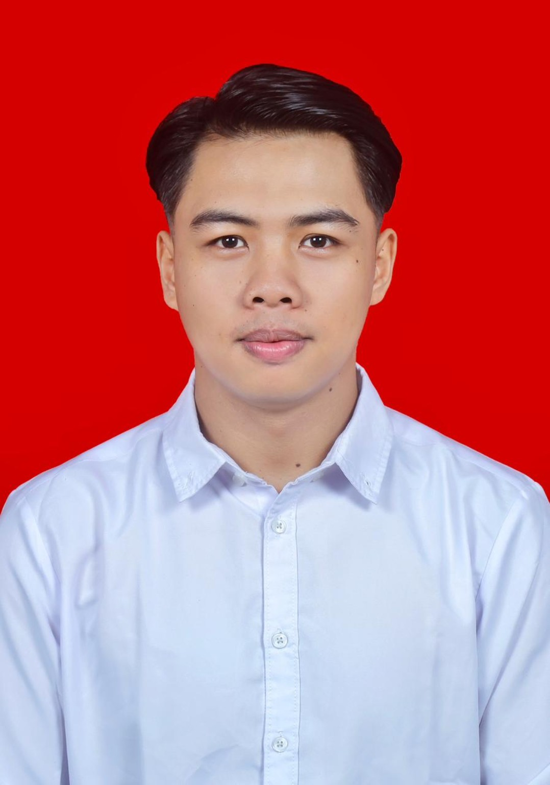

K3 / HSE
SMK3, HIRADC/JSA, inspeksi keselamatan, identifikasi bahaya, pengendalian risiko, dan pemantauan kepatuhan standar K3.
Halo, saya Kevin Clieff Emor, S.Si. Telah lulus pembinaan Calon Ahli K3 Umum (AK3U) bersama PJK3 IJS pada 2026, berpengalaman dalam administrasi pertambangan, dan memiliki sertifikasi kompetensi BNSP Data Management Staff.
Lihat dokumentasi pelatihan PJK3
Menggabungkan pemahaman operasional di lingkungan pertambangan dengan ketelitian dalam pengelolaan dokumen dan data.
Saya telah dinyatakan lulus pembinaan Calon Ahli K3 Umum dari PT Indotama Jasa Sertifikasi (IJS) pada 4 September 2026. Berdasarkan surat keterangan IJS, sertifikat dan/atau SKP Kemnaker masih dalam proses saat surat diterbitkan. Saya juga memiliki sertifikasi kompetensi BNSP Data Management Staff yang diterbitkan pada 2022.
Kompetensi saya mencakup penerapan SMK3, HIRADC/JSA, inspeksi keselamatan kerja, identifikasi serta pengendalian risiko, pemantauan kepatuhan K3, pengolahan data, pelaporan, dan koordinasi administrasi.
Tiga bidang yang saling mendukung efektivitas, keselamatan, dan ketertiban operasional.
SMK3, HIRADC/JSA, inspeksi keselamatan, identifikasi bahaya, pengendalian risiko, dan pemantauan kepatuhan standar K3.
Pengelolaan dokumen, laporan operasional, koordinasi administrasi, inventaris, pengarsipan, serta dokumentasi kegiatan.
Rekapitulasi data, penyusunan laporan, pengelolaan data terstruktur, serta pemeriksaan ketelitian dan kelengkapan data.
Latar belakang di lapangan dan administrasi menjadi fondasi dalam memahami kebutuhan operasional.
Prinsip kerja K3 dan administrasi yang mendukung proses operasional lebih tertib dan terkendali.
Memperhatikan potensi bahaya dan kebutuhan kerja melalui observasi serta pemeriksaan yang terstruktur.
Mengorganisasi data, dokumen, serta informasi penting agar mudah ditinjau dan ditindaklanjuti.
Menyampaikan temuan dan membantu koordinasi untuk mendukung kepatuhan serta perbaikan kerja.
Arsip perjalanan pembinaan Calon Ahli K3 Umum di Gorontalo, disusun per kategori kegiatan: seminar, praktik lapangan, foto angkatan, dan penyerahan sertifikat.
Gorontalo
Dokumentasi pembelajaran, penyampaian materi, dan kegiatan diskusi selama program.
Dokumentasi PKL, observasi kondisi kerja, dan penerapan pemahaman keselamatan di lapangan.
Dokumentasi momen kebersamaan peserta dalam sesi foto angkatan dan penutupan perjalanan pelatihan.
Setiap kategori memiliki judul dan area tersendiri. Jelajahi dokumentasi seminar, PKL, foto angkatan, dan penyerahan sertifikat dari pihak IJS.
Tempat khusus dokumentasi kegiatan seminar, penyampaian materi, dan diskusi kelas.
Bagian ini disiapkan untuk foto seminar, pembelajaran di kelas, dan diskusi selama pelatihan PJK3 IJS. Foto asli akan ditambahkan setelah Anda mengirimkannya.
Dokumentasi kunjungan industri, observasi lapangan, dan pengamatan kondisi kerja.
Dokumentasi individu saat kunjungan lapangan di area industri sebagai bagian dari pembelajaran AK3U.
Dokumentasi kegiatan pengamatan lapangan dan orientasi area kerja bersama pendamping.
Dokumentasi tim peserta saat berjalan menuju titik observasi pada kegiatan praktik kerja lapangan.
Dokumentasi observasi kelompok di lapangan bersama rekan peserta dan pendamping kegiatan.
Dokumentasi pengamatan kondisi area kerja dan peralatan sebagai bagian dari aktivitas PKL.
Dokumentasi video asli kegiatan praktik kerja lapangan sebagai pelengkap galeri foto. Video ini dapat diputar langsung di website atau dibuka pada tab terpisah.
Dokumentasi foto bersama peserta dalam kegiatan pembinaan Calon Ahli K3 Umum di Gorontalo.
Dokumentasi bersama peserta Angkatan IJS 426 / Gorontalo Angkatan 3 pada kegiatan pelatihan.
Foto bersama peserta angkatan sebagai kenangan perjalanan pembinaan Calon AK3U.
Dokumentasi variasi foto bersama rekan-rekan angkatan pelatihan K3.
Kebersamaan peserta dengan seragam pelatihan K3 dalam sesi dokumentasi angkatan.
Potret kebersamaan peserta program pembinaan K3 di Gorontalo.
Dokumentasi suasana akrab dan kekompakan peserta angkatan.
Dokumentasi kelompok peserta Angkatan IJS 426 / Gorontalo Angkatan 3.
Dokumentasi kebersamaan peserta Angkatan IJS 426 / Gorontalo Angkatan 3 saat kunjungan lapangan.
Dokumentasi kekompakan dan kebersamaan rekan satu angkatan pada kegiatan lapangan.
Momen penyerahan sertifikat oleh pihak PT Indotama Jasa Sertifikasi (IJS).
Dokumentasi penyerahan sertifikat kepada peserta dari pihak PT Indotama Jasa Sertifikasi.
Dokumentasi momen penerimaan sertifikat sebagai bagian dari rangkaian penutupan pelatihan.
Foto dokumentasi penutupan dan penyerahan sertifikat oleh perwakilan pihak IJS.
Semua foto PKL, foto angkatan, foto penyerahan sertifikat, dan video di atas berasal dari dokumentasi yang Anda kirimkan. Bagian seminar belum memiliki foto asli.
Arsip dokumen resmi dan sertifikat pelatihan yang saya ikuti. Klik dokumen untuk melihat berkas PDF aslinya.

PT Indotama Jasa Sertifikasi (IJS) · Hotel Yulia, Kota Gorontalo · 24 Agustus–4 September 2026.
Status pada surat: LULUS. Sertifikat dan/atau SKP AK3U Kemnaker masih dalam proses saat surat diterbitkan.
Lihat surat keterangan ↗
Badan Nasional Sertifikasi Profesi (BNSP) · bidang Aplikasi Perkantoran / Office Application.
Dokumen mencantumkan masa berlaku 3 tahun sejak diterbitkan pada 2022; tidak diklaim masih aktif.
Lihat sertifikat & unit kompetensi ↗Seluruh sertifikat penunjang diterbitkan oleh PT Indotama Jasa Sertifikasi (IJS) untuk kegiatan 24 Agustus–4 September 2026.
 Lihat PDF ↗
Lihat PDF ↗
 Lihat PDF ↗
Lihat PDF ↗
 Lihat PDF ↗
Lihat PDF ↗
 Lihat PDF ↗
Lihat PDF ↗
 Lihat PDF ↗
Lihat PDF ↗
 Lihat PDF ↗
Lihat PDF ↗
 Lihat PDF ↗
Lihat PDF ↗
 Lihat PDF ↗
Lihat PDF ↗
 Lihat PDF ↗
Lihat PDF ↗
 Lihat PDF ↗
Lihat PDF ↗
 Lihat PDF ↗
Lihat PDF ↗
Pelatihan Dasar Kepemimpinan Keselamatan
Lihat sertifikat ↗ Lihat PDF ↗
Lihat PDF ↗
 Lihat PDF ↗
Lihat PDF ↗
 Lihat PDF ↗
Lihat PDF ↗
 Lihat PDF ↗
Lihat PDF ↗
 Lihat PDF ↗
Lihat PDF ↗
 Lihat PDF ↗
Lihat PDF ↗
Basic Occupational Health & Safety Environment
Lihat sertifikat ↗Catatan privasi: dokumen PDF menampilkan data pribadi sebagaimana tercantum pada dokumen asli. Pertimbangkan informasi yang ingin dipublikasikan sebelum mengunggah folder ini ke GitHub Pages.
President • 2020–2023
Koordinator Bidang • 2020–2021
Soft skills: komunikasi, koordinasi, problem solving, pengambilan keputusan, multitasking, public speaking, disiplin, dan integritas.
Saya terbuka untuk peluang profesional dan kolaborasi di bidang K3/HSE, administrasi pertambangan, data management, serta peran operasional yang relevan.